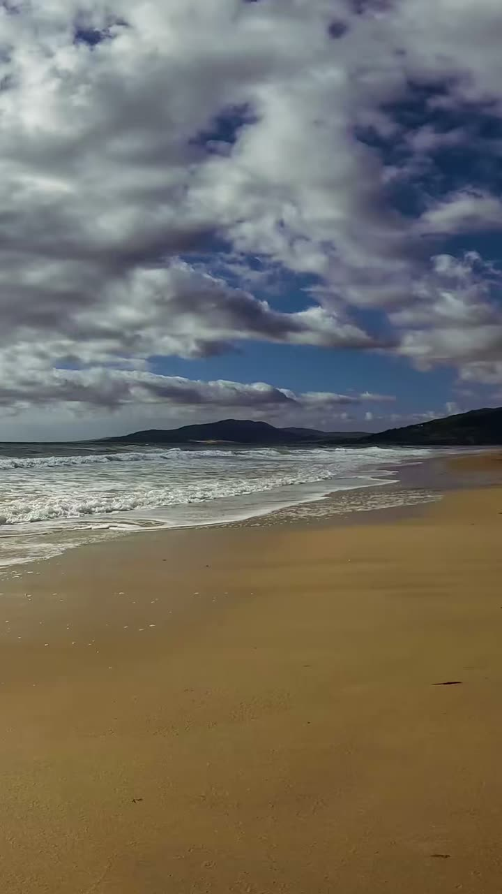
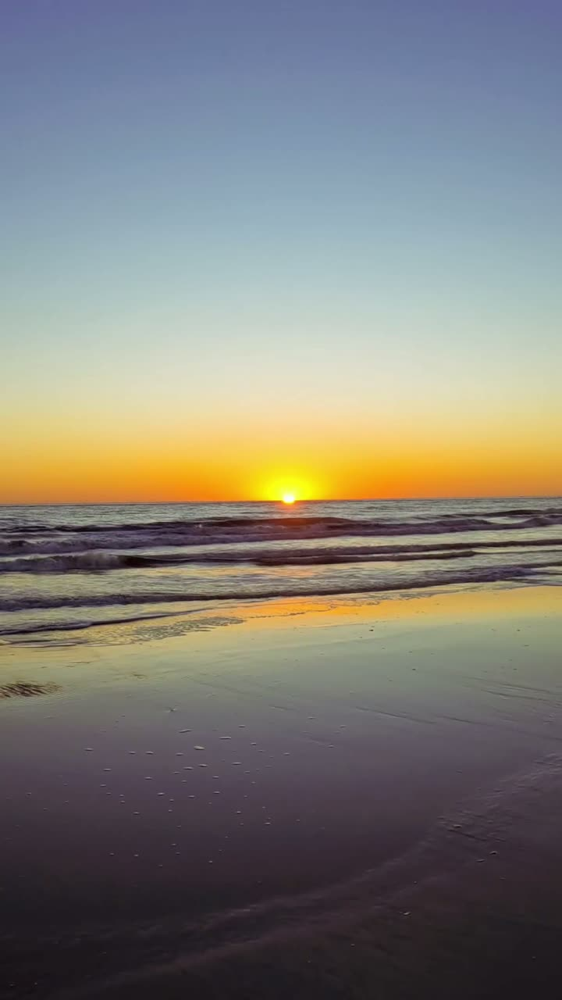

Plate II · The Path Ahead · by dayat evening
Walk it out.
Put your shoes on and go. Choose a length, or just walk until it passes.
Keep this page open. Your screen stays on while you walk, where your phone allows it.
10:00
left in your walk
Nice walk.
What did the urge do?
Nothing here is saved or sent. The app keeps a private record on your phone.